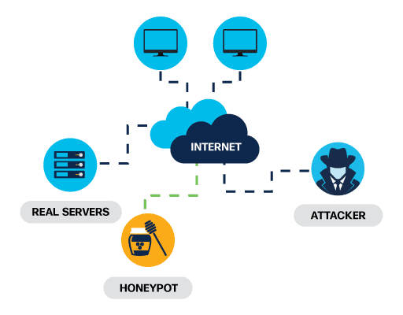
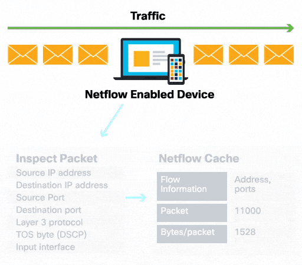

Explain the basics of being safe online, including what cybersecurity is and its potential impact.
Explain the most common cyber threats, attacks and vulnerabilities.
Explain how organizations can protect their operations against these attacks.
Access various information and resources to explore the different career options in cybersecurity.
Module 4 - Protecting the Organization
Welcome to this module, which will outline the various strategies and tools used by cybersecurity
professionals to protect an organization’s network, data and equipment from cybercrime.
You only have to look at the news to understand that all organizations, regardless of type, size or
location, are at risk of a cyber attack. It seems that no one is safe.
So is there anything you can do to help protect an organization from a targeted attack? And with many in
the security industry predicting that it’s not a case of ‘if’ but ‘when’ a cybersecurity breach will
occur, how can you respond to ensure that it has minimal impact?
This module will highlight the actions that you can take to help answer these questions.
Chapter 4.2 - Behavior Approach to Cybersecurity
4.2.1 Behavior-Based Security
Behavior-based security is a form of threat detection that involves capturing and analyzing the flow
of communication between a user on the local network and a local or remote destination. Any changes
in normal patterns of behavior are regarded as anomalies, and may indicate an attack.
Honeypots

A honeypot is a behavior-based detection tool that lures the attacker in by appealing to
their predicted pattern of malicious behavior. Once the attacker is inside the honeypot, the
network administrator can capture, log and analyze their behavior so that they can build a
better defense.
This security architecture uses behavior-based detection and indicators to provide greater
visibility, context and control. The aim is to know who is carrying out the attack, what
type of attack they are performing and where, when and how the attack is taking place. This
security architecture uses many security technologies to achieve this goal.
4.2.2. NetFlow
NetFlow technology is used to gather information about data flowing through a network, including who
and what devices are in the network, and when and how users and devices access the network.

NetFlow is an important component in behavior-based detection and analysis. Switches, routers and
firewalls equipped with NetFlow can report information about data entering, leaving and traveling
through the network.
This information is sent to NetFlow collectors that collect, store and analyze NetFlow data, which
can be used to establish baseline behaviors on more than 90 attributes, such as source and
destination IP address.
4.2.3 Penetration Testing
Penetration testing, commonly known as pen testing, is the act of assessing a computer system,
network or organization for security vulnerabilities. A pen test seeks to breach systems, people,
processes and code to uncover vulnerabilities which could be exploited. This information is then
used to improve the system’s defenses to ensure that it is better able to withstand cyber attacks in
the future.
Explore the five-step pen test process.
Step 1: Planning
The pen tester gathers as much information as possible about a target system or network, its
potential vulnerabilities and exploits to use against it. This involves conducting passive or
active reconnaissance (footprinting) and vulnerability research.
Step 2: Scanning
The pen tester gathers as much information as possible about a target system or network, its
potential vulnerabilities and exploits to use against it. This involves conducting passive or
active reconnaissance (footprinting) and vulnerability research.
port scanning to identify potential access points into a target system
vulnerability scanning to identify potential exploitable vulnerabilities of a particular
target
establishing an active connection to a target (enumeration) to identify the user account,
system account and admin account.
Step 3: Gaining access
The pen tester will attempt to gain access to a target system and sniff network traffic, using
various methods to exploit the system including:
launching an exploit with a payload onto the system
breaching physical barriers to assets
social engineering
exploiting website vulnerabilities
exploiting software and hardware vulnerabilities or misconfigurations
breaching access controls security
cracking weak encrypted Wi-Fi.
Step 4: Maintaining access
The pen tester will maintain access to the target to find out what data and systems are
vulnerable to exploitation. It is important that they remain undetected, typically using
backdoors, Trojan horses, rootkits and other covert channels to hide their presence.
When this infrastructure is in place, the pen tester will then proceed to gather the data that
they consider valuable.
Step 5: Analysis and reporting
The pen tester will provide feedback via a report that recommends updates to products, policies
and training to improve an organization’s security.
4.2.4 Your Turn
You’ve been tasked with carrying out an internal pen test to check @Apollo’s computer network for
vulnerabilities. How will you go about conducting your test? Get this right and earn some much
needed defender points.
Put the following steps in the correct order.
Gather as much information as you can without being detected
Footprint through the network to find ways to intrude
Exploit any vulnerabilities identified in the network by simulating an attack
Report your findings to the team
Identify potential exploitable vulnerabilities
How to carry out a pen test (explanations):
Footprinting through the network to find ways to intrude gives you a chance to gather the
information you need to plan a simulated attack.
Scanning a target allows you to identify potential exploitable weaknesses.
You will need to gain access to a network to exploit any vulnerabilities and simulate an attack.
Maintaining access, without being detected, means that you can gather further information on a
target’s vulnerabilities.
Your findings will be reported to the organization so that security improvements can be made.
4.2.5 Impact Reduction
While most organizations today are aware of common security threats and put considerable effort into
preventing them, no set of security practices is foolproof. Therefore, organizations must be
prepared to contain the damage if a security breach occurs. And they must act fast!
Find out more about the actions organizations should take when a security breach is identified.
Communicate the issue
Communication creates transparency, which is critical in this type of situation.
Internally, all employees should be informed and a clear call to action communicated.
Externally, all clients should be informed through direct communication and official
announcements.
Be sincere and accountable
Respond to the breach in an honest and genuine way, taking responsibility where the organization
is at fault.
Provide details
Be open and explain why the breach took place and what information was compromised.
Organizations are generally expected to take care of any client costs associated with identity
theft services required as a result of a security breach.
Find the cause
Take steps to understand what caused and facilitated the breach. This may involve hiring
forensics experts to research and find out the details.
Apply lessons learned
Make sure that any lessons learned from forensic investigations are applied to prevent similar
breaches from happening in the future.
Check, and check again
Attackers will often attempt to leave a backdoor to facilitate future breaches. To prevent this
from happening, make sure that all systems are clean, no backdoors are installed and nothing
else has been compromised.
Educate!
Raise awareness, train and educate employees, partners and clients on how to prevent future
breaches.
4.2.6 What Is Risk Management?
Don’t forget, the impact of a security breach extends beyond the technical aspect of stolen data or damaged
intellectual property. It can have a devastating effect on an organization’s reputation!